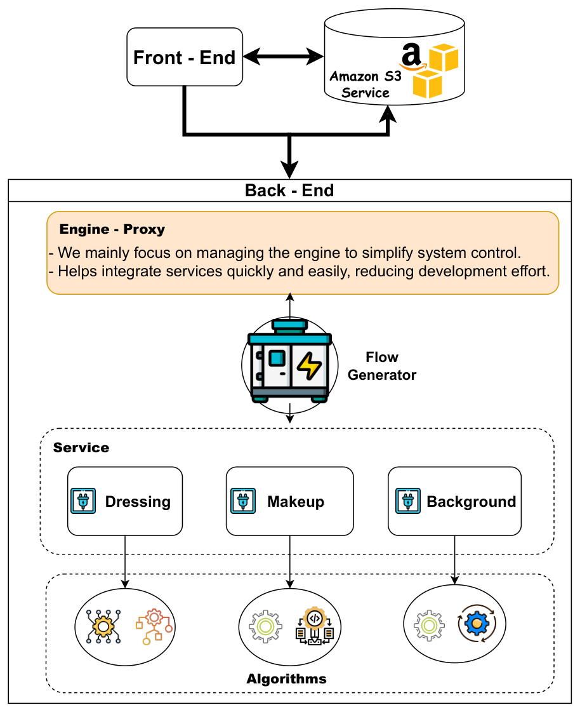
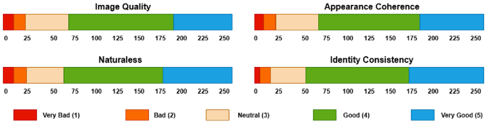
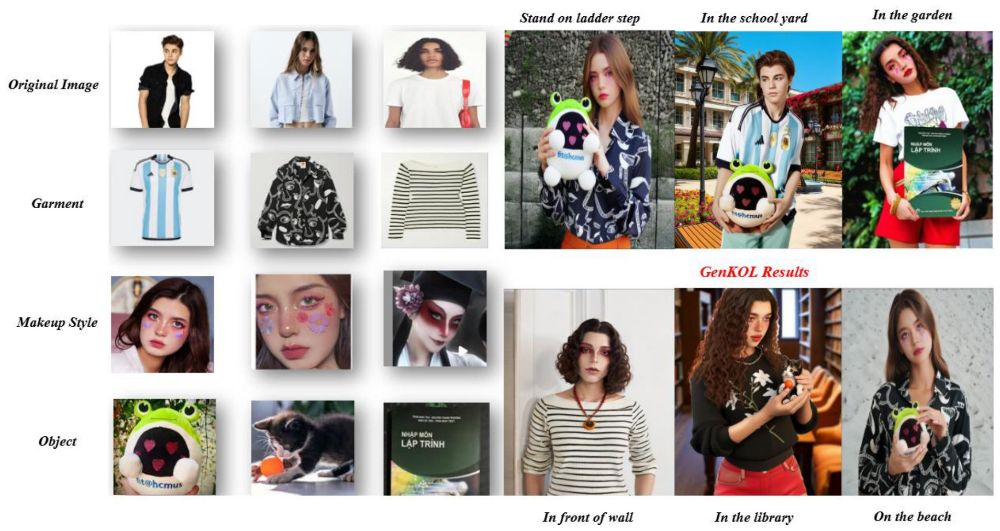
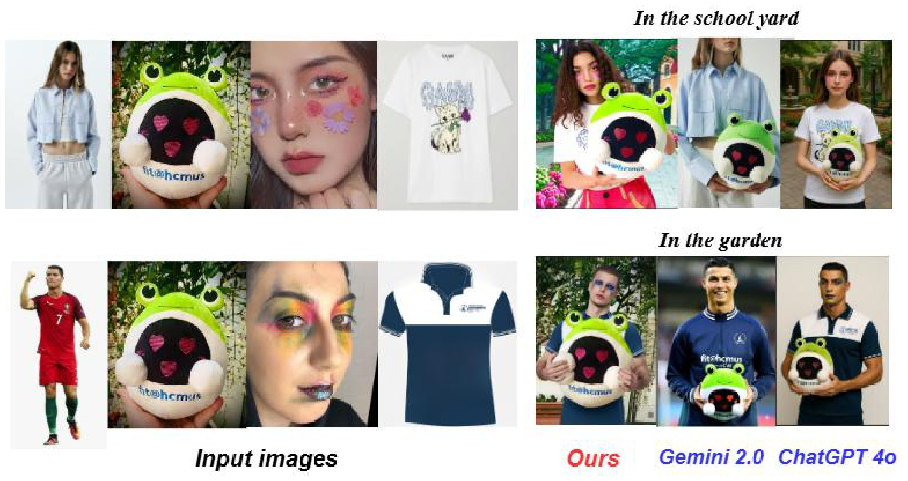

Key Opinion Leader (KOL) play a crucial role in modern marketing by shaping consumer perceptions and enhancing brand credibility. However, collaborating with human KOLs often involves high costs and logistical challenges. To address this, we present GenKOL, an interactive system that empowers marketing professionals to efficiently generate high-quality virtual KOL images using generative AI. GenKOL enables users to dynamically compose promotional visuals through an intuitive interface that integrates multiple AI capabilities, including garment generation, makeup transfer, background synthesis, and hair editing.
These capabilities are implemented as modular, interchangeable services that can be deployed flexibly on local machines or in the cloud. This modular architecture ensures adaptability across diverse use cases and computational environments. Our system can significantly streamline the production of branded content, lowering costs and accelerating marketing workflows through scalable virtual KOL creation.
GenKOL uses a modular, plugin-based architecture in which each AI capability, such as garment generation, makeup transfer or background synthesis, is an independent service with a standardized interface. The architecture consists of four key components: Engine, Flow Generator, Services, and Algorithms.
The Engine is a proxy layer that standardizes communication among services, and the Flow Generator composes executable pipelines from the registered services. A pretrained facial landmark detection model, which identifies 68 key facial landmarks, normalizes the pose before the generative services run.

| Method | Average Generation Time (s) | Image Quality | Consistency |
|---|---|---|---|
| Gemini-2.0 | 30 | Neutral | Bad |
| ChatGPT-4o | 600 | Very Good | Neutral |
| GenKOL | 300 | Good | Very Good |
GenKOL needs 300 s on average, longer than Gemini-2.0 (30 s) and half the time of ChatGPT-4o (600 s). Its image quality is rated Good and its consistency Very Good; the ratings in this table are qualitative.
In the user study of generated images, most ratings fall in the 4-5 range of a 5-point Likert scale.

Given an original image and prompts for garment, makeup style and interaction object, GenKOL synthesizes virtual KOLs that combine all elements, including the specified background.

Outputs of GenKOL, Gemini-2.0 and ChatGPT-4o for the same scenes and visual prompts.

@misc{to2025genkol,
author = {To, Tan-Hiep and Nguyen, Duy-Khang and Nguyen, Tam V. and Tran, Minh-Triet and Le, Trung-Nghia},
title = {GenKOL: Modular Generative AI Framework For Scalable Virtual KOL Generation},
year = {2025},
}